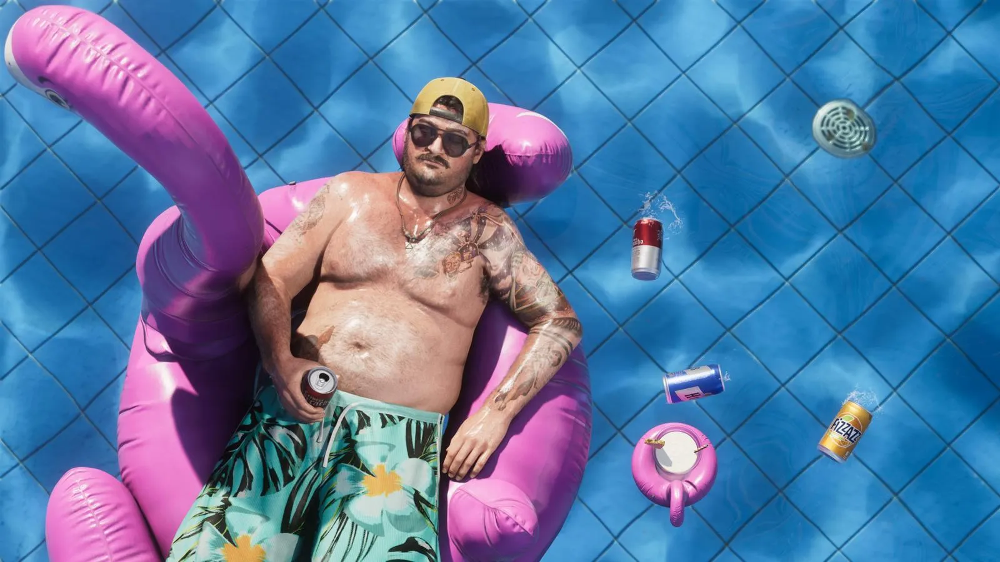
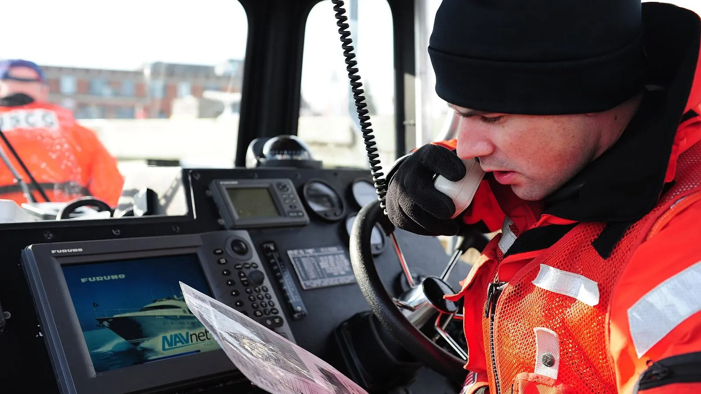
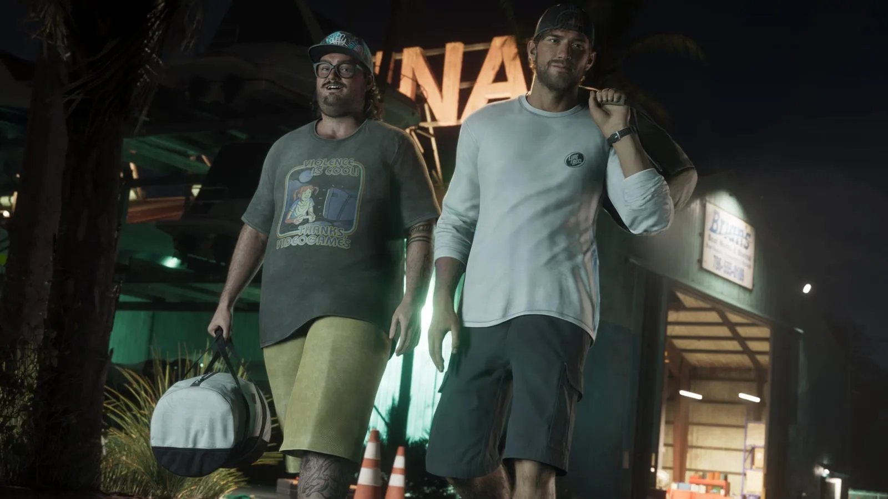

Кэл Хэмптон и эфир береговой охраны
Опубликовано:
Кэл — вымышленный герой, конкретного прототипа у него нет. Но эфир, который он слушает, настоящий: береговая охрана США круглосуточно на связи на открытом морском канале 16.


- Кэл Хэмптон — друг Джейсона, тоже работает на Брайана Хедера.
- По описанию Rockstar, спокойнее всего Кэлу дома: пара банок пива, переговоры береговой охраны в эфире и вкладки браузера в приватном режиме.
- Береговая охрана США круглосуточно слушает 16-й канал морского УКВ-радио (156,8 МГц) — канал бедствия и вызова.
- В Кис за море отвечает сектор береговой охраны Ки-Уэст.
Что в игре
На официальном арте Кэл лежит в бассейне на розовом надувном фламинго: жёлтая кепка, тёмные очки, банка пива в руке, вокруг плавают пустые банки. Rockstar описывает его так: друг Джейсона и тоже человек Брайана, Кэлу спокойнее всего дома — с парой банок пива, переговорами береговой охраны в эфире и несколькими вкладками в приватном режиме браузера.
«Кэл — на самом отливе Америки, и ему там хорошо. Лёгкая паранойя любит компанию, но у его друга Джейсона планы побольше».
Rockstar Games, описание персонажа (по GTABase)

Что в реальности
Береговая охрана США держит связь с судами по морскому УКВ-радио. Главный канал — 16-й (156,8 МГц): на нём подают сигнал бедствия и вызывают друг друга, и береговая охрана слушает его круглосуточно. Рация с этим каналом стоит почти на каждом катере во Флориде, поэтому эфир слышат рыбаки, яхтсмены и все, у кого есть приёмник.
В Кис за море отвечает сектор береговой охраны Ки-Уэст. Для героев, которые работают на Брайана, привычка Кэла выглядит полезной: кто слушает эфир, тот знает, где сейчас патрули. Это наша трактовка, не слова Rockstar.
Объявления для моряков береговая охрана сначала анонсирует на 16-м канале, а сам текст читает на канале 22A. Так канал бедствия не занимают длинными сообщениями — и на нём всегда можно позвать на помощь.
Совпадает и отличается
| Реальность | GTA 6 | |
|---|---|---|
| Эфир береговой охраны | Открытый морской канал 16 | 🟢 Кэл его слушает |
| Место | Флорида-Кис, сектор Ки-Уэст | 🟢 Leonida Keys |
| Герой | — | 🟡 Вымышленный, прототип не назван |
Источники: Rockstar Games — официальное описание персонажа Cal Hampton (по GTABase); U.S. Coast Guard Navigation Center — морское УКВ-радио, каналы 16 и 22A; U.S. Coast Guard — Sector Key West.
Реальные фото: Фото: Petty Officer 3rd Class MyeongHi Clegg, Public domain · Wikimedia Commons. Кадры игры: Rockstar Games.
Каждый день — одно сравнение: кадр игры рядом с реальным фото. Подписывайтесь:
YouTubeInstagramTikTok